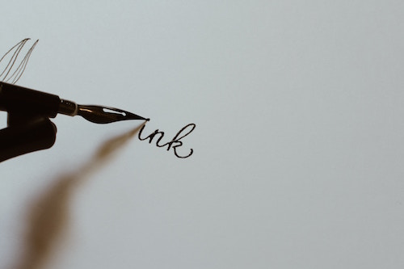
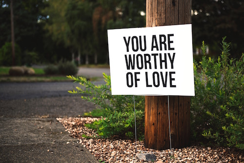

Chesca's Website
All About Chesca
Skills
Something I’m good at would be doing well on my academic subjects in school. I also enjoy being able to put all my pent up stress into drawing or creating art. I’m great at coding, and I use multiple programs when making digital art. I’m also a decently fast typer, so I’m able to get a lot of work done that’s computer/technology related. Another thing I’d like to claim skill in would be my writing, since whenever drawing/making art doesn’t work for me, I’ll make little unfinished pieces of writing that my friends think are interesting and that I should continue or update them.

Hobbies
DRAWING/Art. That’s something that I’ll definitely always enjoy doing. Making drawings allows me to put images I want into paper, along with making people happy when they like my art. Usually when taking notes on a subject, it’s not uncommon for me to doodle into the margins, something my friends find amusement in when they ask to look at my notes. I’ll always draw something every day, whether it’s just a lonely scribble, or a full blown out masterpiece.
Reading, along with drawing, has also been something I look forward to doing when I get home from school. To be honest, I wasn’t really that much into reading, because, well it’s just words, and nothing, could ever be interesting in looking at letters on a paper. Ahah, well that was my mindset until one of my close friends introduced me into the world of… fandoms and fanfiction. A deep abyss that you can never escape and have no reason to want to.

Interests
Fanfiction allowed me to read interesting stories and have a sneak peak into skilled writers’ works, and some of those were absolutely amazing and deserve awards. 2 years after discovering fanfiction, I finally gave Harry Potter a try, and wow, isn’t that the most smartest decision I’ve ever made in my life.
Listening to different brands of music has also been an interest I like to indulge in. There’s just so many branches of music, that other people don’t take the time to listen. Foreign music, also falls into that category. I find it really, for lack of a better word, dumb, that people won’t listen to foreign music because of the language barrier. Just because you can’t understand the lyrics doesn’t mean it’s bad! The rhythm could be really catchy, the dancing, or the aesthetics! There’s also close captioning so, hah.
Family
My family moved to america when I was five years old. I’m still able to speak and understand my home-language, but not as fluently. I have two younger sisters, one’s a seventh grader and the other a first. My parents work a lot, so I have to take care of my siblings, and we do our best to spend time together.
